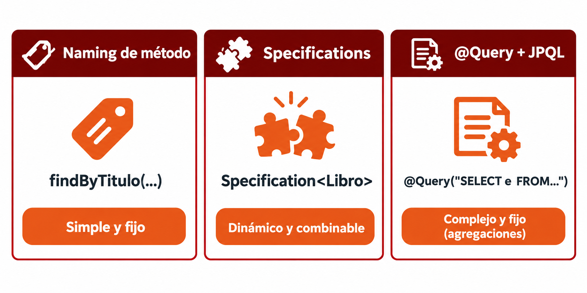
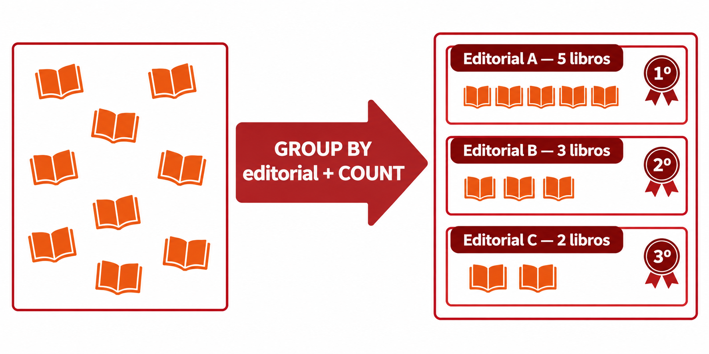

🧩 8. Consultas JPQL y transacciones¶
Descarga de diapositivas
Añades una nueva vía de consulta mediante @Query y JPQL, pensada para consultas que resultan difíciles de expresar con un método derivado por nombre o con una Specification.
🧩 El problema: lo que ni el naming ni las Specifications resuelven bien¶
Imagina que quieres un ranking de editoriales, ordenado por cuántos libros tiene cada una en el catálogo. Prueba a resolverlo con lo que ya conoces:
- Naming de método: no existe ninguna combinación de palabras que le pida a Spring Data "agrupa por editorial y ordena por el número de libros de cada grupo" — el naming deriva condiciones sobre campos (
findByTitulo,findByPrecioLessThan), no agregaciones sobre una relación completa. La sintaxis, directamente, no llega ahí. - Specifications: están pensadas para construir condiciones
WHEREdinámicas y combinables entre sí (Tema 1, apartado anterior) — no para expresar unGROUP BYconORDER BYsobre el resultado de una agregación. Se podría forzar conCriteriaBuilder, pero a cambio de perder justo lo que hace útiles a las Specifications (filtros simples, combinables) por una consulta rígida y bastante más difícil de leer que el propio JPQL.
Aquí entra @Query con JPQL: permite escribir consultas fijas —siempre con la misma estructura— que resultan demasiado elaboradas para expresarlas mediante el nombre de un método o combinando Specifications.¶
🔤 Qué es JPQL¶
JPQL (Jakarta Persistence Query Language) es el lenguaje de consultas de la propia especificación JPA. La idea de fondo es sencilla: en vez de preguntarle a la base de datos por sus tablas y columnas, le preguntas a JPA por tus clases Java y sus propiedades — la misma pregunta, en el vocabulario con el que ya trabajas cada día.
Empieza por lo más simple, una consulta sin relaciones de por medio:
| Consulta | |
|---|---|
| SQL | SELECT * FROM libro WHERE precio > 20 |
| JPQL | SELECT l FROM Libro l WHERE l.precio > 20 |
Solo cambian dos cosas: Libro con mayúscula inicial (la clase Java, no la tabla libro), y l.precio en vez de solo precio (la propiedad del objeto l, no una columna suelta). El resto —SELECT, WHERE, el operador >— se escribe exactamente igual: JPQL toma prestada casi toda la sintaxis de SQL.
La diferencia se nota de verdad en cuanto la consulta cruza una relación:
| Consulta | |
|---|---|
| SQL | SELECT e.* FROM editorial e JOIN libro l ON l.editorial_id = e.id |
| JPQL | SELECT e FROM Editorial e JOIN e.libros l |
En SQL escribes tú la condición de unión a mano (ON l.editorial_id = e.id), porque la base de datos no sabe nada de tus relaciones: solo ve dos tablas y una clave foránea. En JPQL, e.libros navega la relación @OneToMany que ya has declarado en tu entidad Editorial — JPA ya conoce esa relación, así que no hace falta repetir la condición.
🛤️ Las tres vías de consulta de Spring Data¶
Ya conoces dos formas de construir consultas; ahora incorporas una tercera:
| Vía | Cuándo usarla |
|---|---|
Naming de método (findByTitulo, findByEditorialId) |
Consultas simples, fijas, sin lógica adicional. |
| Specifications (apartado anterior) | Filtros dinámicos, combinables en tiempo de ejecución. |
@Query con JPQL |
Consultas complejas y fijas — típicamente, agregaciones. |

Una agregación (por si el repaso de SQL lo necesita) es una operación que resume varias filas en un único resultado: COUNT (cuántas), SUM (suma), AVG (media)... normalmente combinada con GROUP BY, que agrupa las filas antes de aplicar la agregación a cada grupo por separado.
🎯 JPQL con parámetros¶
Antes de llegar a la agregación, el uso más habitual de @Query es mucho más simple: una consulta con una condición que varía según quien la llama. Imagina que quieres los libros publicados por una editorial concreta, buscando por su nombre:
| Java | |
|---|---|
l.editorial.nombre navega dos pasos con propiedades Java —primero a la relación editorial de Libro, luego a su propiedad nombre—, nunca con nombres de columna. @Param("nombreEditorial") conecta el :nombreEditorial de la consulta con el parámetro del método: el texto entre paréntesis tiene que coincidir exactamente con el que escribes tras los dos puntos en el JPQL.
Aquí, un error de escritura no espera a que ejecutes la consulta
Si escribieras l.editorial.nombree (una letra de más) o :nombreEditoral (un parámetro que no casa), Spring no esperaría a la primera petición para fallar: valida la sintaxis de cada @Query JPQL en cuanto arranca la aplicación, contra el propio modelo de tus entidades. Es justo lo contrario de lo que le pasa a una Specification (apartado anterior), que solo descubre un nombre de propiedad equivocado en el momento en que alguien la ejecuta de verdad, con una petición HTTP real. Un fallo en el arranque es más incómodo a corto plazo, pero mucho más seguro: no puede llegar nunca a producción sin que alguien lo vea.
📊 Un ejemplo completo: el ranking de editoriales¶
Siguiendo con la librería: imagina que quieres un ranking de editoriales ordenado por cuántos libros tiene cada una en el catálogo. Es una consulta fija (siempre la misma), pero con JOIN, agregación y ordenación por el resultado de esa agregación — el caso típico de @Query.
La consulta con @Query¶
| Java | |
|---|---|
@Query, colocada sobre el método del repositorio, le dice a Spring Data: "no derives la consulta a partir del nombre del método, usa literalmente este JPQL que te doy". Es la diferencia clave con el naming de método (findByTitulo): ahí el nombre del método es la consulta; aquí el nombre (rankingPorNumeroDeLibros) es solo una etiqueta descriptiva para quien lea el código —podrías llamarlo de cualquier otra forma— y la consulta real vive entera dentro de la anotación.
Desglosado, fragmento a fragmento:
| Fragmento | Qué hace |
|---|---|
SELECT e |
Devuelve el objeto Editorial completo — no una columna suelta, como harías en SQL. |
FROM Editorial e |
La entidad de partida, con el alias e para referirte a ella en el resto de la consulta. |
LEFT JOIN e.libros l |
Navega la relación Editorial → libros y mantiene también las editoriales que todavía no tienen ningún libro. |
GROUP BY e |
Agrupa, por cada editorial, todos los libros que comparten esa misma editorial. |
ORDER BY COUNT(l) DESC |
Ordena esos grupos por cuántos libros tiene cada uno, de mayor a menor. |
Junta las cinco piezas y la consulta completa dice: «para cada editorial, cuenta sus libros y ordénalas de la que más tiene a la que menos».
Se utiliza LEFT JOIN para que también aparezcan las editoriales que todavía no tienen libros. En ese caso, COUNT(l) vale 0 y la editorial queda al final del ranking.

| Text Only | |
|---|---|
Cuando necesitas SQL directamente: nativeQuery = true¶
JPQL cubre la mayoría de casos, pero hay funcionalidad que directamente no existe en JPQL — las funciones de ventana (window functions) de SQL son el ejemplo más claro, y no las has visto todavía.
La más simple es ROW_NUMBER(): numera cada fila, una a una, según el orden que le indiques:
Esto no agrupa nada — sigues teniendo una fila por libro, igual que antes de añadir esa función — pero cada fila lleva ahora un número de posición, calculado según el orden por precio. OVER (ORDER BY precio DESC) es la "ventana": le dice a ROW_NUMBER() en qué orden mirar las filas para numerarlas.
Con estos libros de partida:
| titulo | precio |
|---|---|
| El nombre del viento | 24.99 |
| Palabras de fuego | 22.50 |
| La sombra del viento | 19.99 |
| 1984 | 12.99 |
la consulta de arriba devuelve las mismas cuatro filas, ni una más ni una menos, con la columna posicion añadida:
| titulo | precio | posicion |
|---|---|---|
| El nombre del viento | 24.99 | 1 |
| Palabras de fuego | 22.50 | 2 |
| La sombra del viento | 19.99 | 3 |
| 1984 | 12.99 | 4 |
Ahora aplica la misma idea al ranking de editoriales: quieres que el propio ranking devuelva ya la posición numérica de cada una (1º, 2º, 3º...), en vez de calcularla tú en Java recorriendo la lista después. Aquí la ventana no numera filas sueltas de libros, sino los grupos que ya forma el GROUP BY —cada editorial, con su recuento de libros—, así que combinas las dos cosas en la misma consulta. Eso ya es SQL de verdad, no JPQL:
| Java | |
|---|---|
nativeQuery = true le dice a Spring Data que ese texto no es JPQL — es SQL tal cual lo entiende tu gestor, con sus tablas, columnas y funciones específicas (aquí, ROW_NUMBER() OVER (...), que JPQL no soporta bajo ningún concepto). Tiene dos costes reales: pierdes la independencia de motor que sí tenía JPQL (esta consulta concreta solo funciona en gestores que soporten esa sintaxis), y el resultado deja de ser una lista de Editorial — pasa a ser List<Object[]> (cada fila, tal cual la devuelve la base de datos), porque el motor no sabe mapear una columna calculada como posicion a ningún campo de tu entidad. Recorrer ese Object[] fila a fila, extrayendo cada valor por posición, es el precio a pagar por pedirle a la base de datos algo que JPQL no puede expresar.
Transacciones al escribir con JPQL: @Modifying¶
Todo lo visto hasta ahora son lecturas, pero JPQL también puede ejecutar un UPDATE o un DELETE que afecte a varias filas sin cargarlas antes en Java una a una.
Ya has hecho algo parecido mediante un procedimiento almacenado. Ahora vas a conocer otra posibilidad: escribir la actualización directamente en el repository mediante @Query.
Imagina que quieres aplicar un descuento a todos los libros de una editorial concreta:
| Java | |
|---|---|
@Modifying le dice a Spring Data que esta consulta no es un SELECT, sino una operación que modifica datos. El método devuelve un int: el número de filas que se han actualizado.
Por ejemplo, si el descuento se aplica a cinco libros, el método devolverá 5. Ninguna de esas filas necesita convertirse antes en un objeto Libro dentro de Java.
Tanto este método como el procedimiento almacenado evitan recuperar todos los libros y recorrerlos con un bucle. La diferencia principal es dónde escribes la operación:
- En el procedimiento almacenado, la operación se guarda dentro de PostgreSQL.
- Con JPQL, la actualización se declara en el repository de la aplicación.
En este apartado utilizarás la segunda opción porque el objetivo es aprender a escribir consultas de modificación mediante @Query y @Modifying.
Aquí @Transactional no puede ser readOnly
Un UPDATE o un DELETE modifica datos, por lo que necesita una transacción de escritura. Debes utilizar @Transactional a secas, igual que en los métodos create() y update() de tus servicios (Tema 1).
✅ Ideas clave¶
Abrir resumen
- JPQL opera sobre entidades y propiedades Java, no sobre tablas y columnas SQL.
- Las tres vías de consulta de Spring Data: naming de método (simple y fijo), Specifications (dinámico),
@Query/JPQL (complejo y fijo, típicamente agregaciones). @Paramconecta un:parámetrodel JPQL con un argumento del método — el nombre tiene que coincidir exactamente.- Spring comprueba las consultas escritas con
@Queryal arrancar la aplicación, por lo que muchos errores se detectan antes de recibir ninguna petición. En unaSpecification, en cambio, algunos errores solo aparecen cuando se ejecuta la búsqueda. @Query(nativeQuery = true)escribe SQL literal cuando JPQL no llega (funciones de ventana, por ejemplo) — a cambio, pierdes independencia de motor y el resultado ya no son entidades, sinoObject[]por fila.- Una agregación (
COUNT,SUM,AVG... conGROUP BY) resume varias filas en un resultado. @Modifyingmarca una@QueryJPQL como escritura (UPDATE/DELETE); necesita@Transactionala secas, nuncareadOnly, y devuelve el número de filas afectadas, no una lista.